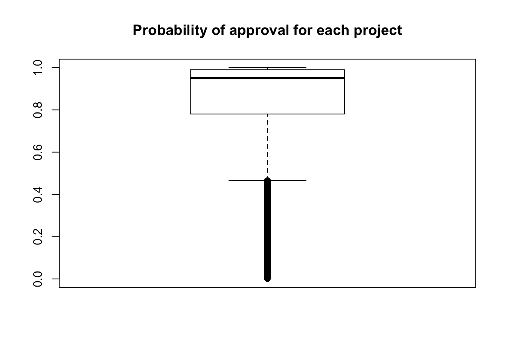

Last updated: 2018-04-22
Code version: a7d2119
The goal of this script is to run XGBoost on a model which includes information about the essays.
# Libraries
library(dplyr)
Attaching package: 'dplyr'The following objects are masked from 'package:stats':
filter, lagThe following objects are masked from 'package:base':
intersect, setdiff, setequal, unionlibrary(stringr)
library(tidytext)Warning: package 'tidytext' was built under R version 3.4.4library(ggplot2)
library(tidyverse)── Attaching packages ──────────────────────────────────────────────────────────────────────────── tidyverse 1.2.1 ──✔ tibble 1.4.2 ✔ readr 1.1.1
✔ tidyr 0.7.2 ✔ purrr 0.2.4
✔ tibble 1.4.2 ✔ forcats 0.2.0── Conflicts ─────────────────────────────────────────────────────────────────────────────── tidyverse_conflicts() ──
✖ dplyr::filter() masks stats::filter()
✖ dplyr::lag() masks stats::lag()library("xgboost")
Attaching package: 'xgboost'The following object is masked from 'package:dplyr':
slicelibrary(caret)Loading required package: lattice
Attaching package: 'caret'The following object is masked from 'package:purrr':
lift# Open the datasets
train <- read.csv("~/Dropbox/DonorsChoose/train.csv")
test <- read.csv("~/Dropbox/DonorsChoose/test.csv")
resources <- read.csv("~/Dropbox/DonorsChoose/resources.csv")
combine_train_test <- rbind(train[,1:15], test)# First, we want to select project id, title name, and if the project was approved or not
id_title <- c(1, 9)
train_text <- combine_train_test[,id_title]
train_text[,1] <- as.character(train_text[,1])
train_text[,2] <- as.character(train_text[,2])
train_text <- as.tibble(train_text)
tidy_books <- train_text %>% unnest_tokens(word, project_title)
freq_table <- count(tidy_books, id)
title_word_count_by_project <- as.data.frame(freq_table)get_min_med <- function(name_of_tibble){
# Get minimium and median
janeaustensentiment <- tidy_books %>% inner_join(get_sentiments("afinn"))
#janeaustensentiment <- tidy_books %>% left_join(get_sentiments("afinn"))
check_min <- aggregate(janeaustensentiment$score, by = list(janeaustensentiment$id), FUN = min)
colnames(check_min) <- c("id", "min_score")
check_med <- aggregate(janeaustensentiment$score, by = list(janeaustensentiment$id), FUN = median)
colnames(check_med) <- c("id", "med_score")
check_corr_titles <- cbind(check_min$id, check_min$min_score, check_med$med_score)
colnames(check_corr_titles) <- c("id", "min_score", "med_score")
check_corr_titles <- as.data.frame(check_corr_titles)
return(check_corr_titles)
}
#min_med_title <- get_min_med(tidy_books)# First, we want to select project id, title name, and if the project was approved or not
id_title <- c(1, 10)
train_text <- combine_train_test[,id_title]
train_text[,1] <- as.character(train_text[,1])
train_text[,2] <- as.character(train_text[,2])
train_text <- as.tibble(train_text)
tidy_books <- train_text %>% unnest_tokens(word, project_essay_1)
# Find how many words in essay1
freq_table <- count(tidy_books, id)
essay1_word_count_by_project <- as.data.frame(freq_table)
summary(title_word_count_by_project$id %in% essay1_word_count_by_project$id) Mode FALSE TRUE
logical 1 260114 which((title_word_count_by_project$id %in% essay1_word_count_by_project$id) == FALSE)[1] 121566min_med_essay1 <- get_min_med(tidy_books)Joining, by = "word"# First, we want to select project id, title name, and if the project was approved or not
id_title <- c(1, 11)
train_text <- combine_train_test[,id_title]
train_text[,1] <- as.character(train_text[,1])
train_text[,2] <- as.character(train_text[,2])
train_text <- as.tibble(train_text)
tidy_books <- train_text %>% unnest_tokens(word, project_essay_2)
# Find how many words in essay1
freq_table <- count(tidy_books, id)
essay2_word_count_by_project <- as.data.frame(freq_table)
min_med_essay2 <- get_min_med(tidy_books)Joining, by = "word"word_count <- merge(title_word_count_by_project, essay1_word_count_by_project, by = c("id"))
colnames(word_count) <- c("id", "title_count", "essay1_count")
total_word_count <- merge(word_count, essay2_word_count_by_project, by = c("id"))
colnames(total_word_count) <- c("id", "title_count", "essay1_count", "essay2_count")# Total price
resources[,1] <- as.character(resources[,1])
resources_total_price <- as.data.frame(cbind(resources$id, resources$quantity*resources$price), stringsAsFactors = FALSE)
resources_total_price[,2] <- as.numeric(resources_total_price[,2])
resources_total_price2 <- aggregate(resources_total_price[,2], by=list(Category=resources_total_price[,1]), FUN=sum)
# Total quantity
resources_quantity_total <- aggregate(resources$quantity, by=list(Category=resources$id), FUN=sum)
resources_together <- as.data.frame(cbind(resources_total_price2, resources_quantity_total[,2]), stringsAsFactors = FALSE)
colnames(resources_together) <- c("id", "total_amount", "total_items")
# Merge resources with training and test data
training_data <- merge(resources_together, train, by = c("id"))
testing_data <- merge(resources_together, test, by = c("id"))
# Merge word count with training and test data
training_data <- merge(total_word_count, training_data, by = c("id"))
testing_data <- merge(total_word_count, testing_data, by = c("id"))
## set the seed to make your partition reproductible
set.seed(123)
## 75% of the sample size
smp_size <- floor(0.75 * nrow(training_data))
train_ind <- sample(seq_len(nrow(training_data)), size = smp_size)
train <- training_data[train_ind, ]
test2 <- training_data[-train_ind, ]
################################## Training data #############################
#basic_features <- c(2,3,5,6,8,9,17)
basic_features <- c(2,3,4,5,6,8,9,11,12,20)
train_data <- train[,basic_features]
# XGBoost only works with numeric vectors
train_data[,1] <- as.numeric(train_data[,1])
train_data[,2] <- as.numeric(train_data[,2])
train_data[,3] <- as.numeric(train_data[,3])
train_data[,4] <- as.numeric(train_data[,4])
train_data[,5] <- as.numeric(train_data[,5])
train_data[,6] <- as.numeric(train_data[,6])
train_data[,7] <- as.numeric(train_data[,7])
train_data[,8] <- as.numeric(train_data[,8])
train_data[,9] <- as.numeric(train_data[,9])
#train_data <- as.list(train_data)
train_data <- as.matrix(train_data)
train_labels <- as.matrix(train[,21])
################################## Test data #############################
#basic_features <- c(2,3,5,6,8,9,17)
test2_data <- test2[,basic_features]
# XGBoost only works with numeric vectors
test2_data[,1] <- as.numeric(test2_data[,1])
test2_data[,2] <- as.numeric(test2_data[,2])
test2_data[,3] <- as.numeric(test2_data[,3])
test2_data[,4] <- as.numeric(test2_data[,4])
test2_data[,5] <- as.numeric(test2_data[,5])
test2_data[,6] <- as.numeric(test2_data[,6])
test2_data[,7] <- as.numeric(test2_data[,7])
test2_data[,8] <- as.numeric(test2_data[,8])
test2_data[,9] <- as.numeric(test2_data[,9])
#train_data <- as.list(train_data)
test2_data <- as.matrix(test2_data)
test2_labels <- as.matrix(test2[,21])
############ Run dtrain and dtest, weight by the unequal number of positive and negative cases ##############
dtrain <- xgb.DMatrix(data = train_data, label=train_labels)
dtest <- xgb.DMatrix(data = test2_data, label=test2_labels)
watchlist <- list(train=dtrain, test=dtest)
negative_cases <- sum(train_labels == 0)
positive_cases <- sum(train_labels == 1)
bst <- xgb.train(data=dtrain, max_depth=70, eta=1, nthread = 2, nrounds=24, watchlist=watchlist, scale_pos_weight = negative_cases/positive_cases, eval_metric = "error", eval_metric = "logloss", objective = "binary:logistic")[1] train-error:0.244239 train-logloss:0.530805 test-error:0.354965 test-logloss:0.637852
[2] train-error:0.177652 train-logloss:0.423910 test-error:0.321793 test-logloss:0.610615
[3] train-error:0.127893 train-logloss:0.345935 test-error:0.299780 test-logloss:0.594886
[4] train-error:0.094684 train-logloss:0.287466 test-error:0.281129 test-logloss:0.583542
[5] train-error:0.071617 train-logloss:0.244014 test-error:0.271639 test-logloss:0.580794
[6] train-error:0.054387 train-logloss:0.209074 test-error:0.262720 test-logloss:0.578922
[7] train-error:0.041865 train-logloss:0.181967 test-error:0.254679 test-logloss:0.579009
[8] train-error:0.032682 train-logloss:0.160441 test-error:0.248440 test-logloss:0.580337
[9] train-error:0.025732 train-logloss:0.142391 test-error:0.244728 test-logloss:0.582083
[10] train-error:0.020533 train-logloss:0.128021 test-error:0.240993 test-logloss:0.584089
[11] train-error:0.016330 train-logloss:0.115869 test-error:0.237346 test-logloss:0.587236
[12] train-error:0.012705 train-logloss:0.105682 test-error:0.235457 test-logloss:0.590627
[13] train-error:0.009915 train-logloss:0.097113 test-error:0.231634 test-logloss:0.593656
[14] train-error:0.007850 train-logloss:0.089877 test-error:0.230470 test-logloss:0.597247
[15] train-error:0.005873 train-logloss:0.083046 test-error:0.227614 test-logloss:0.600507
[16] train-error:0.004782 train-logloss:0.077277 test-error:0.226582 test-logloss:0.603295
[17] train-error:0.003735 train-logloss:0.072467 test-error:0.224736 test-logloss:0.605002
[18] train-error:0.002841 train-logloss:0.068158 test-error:0.224802 test-logloss:0.607706
[19] train-error:0.002241 train-logloss:0.064100 test-error:0.222935 test-logloss:0.610833
[20] train-error:0.001677 train-logloss:0.060586 test-error:0.221727 test-logloss:0.613448
[21] train-error:0.001252 train-logloss:0.057545 test-error:0.220870 test-logloss:0.616021
[22] train-error:0.000974 train-logloss:0.054636 test-error:0.220540 test-logloss:0.619788
[23] train-error:0.000791 train-logloss:0.051975 test-error:0.218805 test-logloss:0.622311
[24] train-error:0.000630 train-logloss:0.049618 test-error:0.218344 test-logloss:0.624725 test_data <- testing_data[,basic_features]
test_data[,1] <- as.numeric(test_data[,1])
test_data[,2] <- as.numeric(test_data[,2])
test_data[,3] <- as.numeric(test_data[,3])
test_data[,4] <- as.numeric(test_data[,4])
test_data[,5] <- as.numeric(test_data[,5])
test_data[,6] <- as.numeric(test_data[,6])
test_data[,7] <- as.numeric(test_data[,7])
test_data[,8] <- as.numeric(test_data[,8])
test_data[,9] <- as.numeric(test_data[,9])
#train_data <- as.list(train_data)
test_data <- as.matrix(test_data)
pred <- predict(bst, test_data)
make_csv <- as.data.frame(cbind(testing_data$id, pred), stringsAsFactors = FALSE)
colnames(make_csv) <- cbind("id", "project_is_approved")
boxplot(as.numeric(make_csv$project_is_approved), ylim = c(0,1), main = "Probability of approval for each project")
order_id <- make_csv[order(match(make_csv$id, test$id)), ]
dim(order_id)[1] 78035 2write.csv(order_id, "../data/sample_submission_word_count2.csv", row.names = FALSE, sep= ",")Warning in write.csv(order_id, "../data/
sample_submission_word_count2.csv", : attempt to set 'sep' ignoredThe score is 0.57629.
train_data_together <- as.data.frame(rbind(train_data, test2_data))
train_labels_together <- as.factor(rbind(train_labels, test2_labels))
levels(train_labels_together) <- c("first_class", "second_class")
#colnames(train_labels_together) <- c("project_is_approved")
train_labels_together <- as.factor(train_labels_together)
fitControl <- trainControl(method="none",classProbs = TRUE)
xgbGrid <- expand.grid(nrounds = 100,
max_depth = 3,
eta = .05,
gamma = 0,
colsample_bytree = .8,
min_child_weight = 1,
subsample = 1)
control <- trainControl(method = "none", number = 5,
classProbs = TRUE,
summaryFunction = twoClassSummary)
metric <- "ROC"
fit.xgb <- train(x = train_data_together, y = train_labels_together, method="xgbTree", metric=metric, trControl=control, preProc = c("center", "scale"), tuneGrid = xgbGrid)
predictedval <- predict(fit.xgb, newdata=test_data, type = 'prob')
make_csv <- as.data.frame(cbind(testing_data$id, predictedval$second_class), stringsAsFactors = FALSE)
colnames(make_csv) <- cbind("id", "project_is_approved")
order_id <- make_csv[order(match(make_csv$id, test$id)), ]
head(order_id) id project_is_approved
69905 p233245 0.933689400553703
28961 p096795 0.862884551286697
70819 p236235 0.895998820662498
70040 p233680 0.795785814523697
51515 p171879 0.826388254761696
4829 p016071 0.827602431178093dim(order_id)[1] 78035 2write.csv(order_id, "../data/sample_submission_metric_ROC.csv", row.names = FALSE, sep= ",")Warning in write.csv(order_id, "../data/
sample_submission_metric_ROC.csv", : attempt to set 'sep' ignoredThe score is 0.64169.
sessionInfo()R version 3.4.3 (2017-11-30)
Platform: x86_64-apple-darwin15.6.0 (64-bit)
Running under: OS X El Capitan 10.11.6
Matrix products: default
BLAS: /Library/Frameworks/R.framework/Versions/3.4/Resources/lib/libRblas.0.dylib
LAPACK: /Library/Frameworks/R.framework/Versions/3.4/Resources/lib/libRlapack.dylib
locale:
[1] en_US.UTF-8/en_US.UTF-8/en_US.UTF-8/C/en_US.UTF-8/en_US.UTF-8
attached base packages:
[1] stats graphics grDevices utils datasets methods base
other attached packages:
[1] bindrcpp_0.2 caret_6.0-79 lattice_0.20-35 xgboost_0.6.4.1
[5] forcats_0.2.0 purrr_0.2.4 readr_1.1.1 tidyr_0.7.2
[9] tibble_1.4.2 tidyverse_1.2.1 ggplot2_2.2.1 tidytext_0.1.8
[13] stringr_1.3.0 dplyr_0.7.4
loaded via a namespace (and not attached):
[1] httr_1.3.1 ddalpha_1.3.1.1 splines_3.4.3
[4] sfsmisc_1.1-2 jsonlite_1.5 foreach_1.4.4
[7] prodlim_1.6.1 modelr_0.1.1 assertthat_0.2.0
[10] stats4_3.4.3 DRR_0.0.3 cellranger_1.1.0
[13] yaml_2.1.18 robustbase_0.92-8 ipred_0.9-6
[16] pillar_1.1.0 backports_1.1.2 glue_1.2.0
[19] digest_0.6.15 rvest_0.3.2 colorspace_1.3-2
[22] recipes_0.1.2 htmltools_0.3.6 Matrix_1.2-13
[25] plyr_1.8.4 psych_1.7.8 timeDate_3043.102
[28] pkgconfig_2.0.1 CVST_0.2-1 broom_0.4.3
[31] haven_1.1.1 scales_0.5.0 gower_0.1.2
[34] lava_1.6 git2r_0.21.0 withr_2.1.2
[37] nnet_7.3-12 lazyeval_0.2.1 cli_1.0.0
[40] mnormt_1.5-5 survival_2.41-3 magrittr_1.5
[43] crayon_1.3.4 readxl_1.0.0 evaluate_0.10.1
[46] tokenizers_0.2.0 janeaustenr_0.1.5 nlme_3.1-131
[49] SnowballC_0.5.1 MASS_7.3-48 xml2_1.1.1
[52] dimRed_0.1.0 foreign_0.8-69 class_7.3-14
[55] tools_3.4.3 data.table_1.10.4-3 hms_0.4.0
[58] kernlab_0.9-25 munsell_0.4.3 compiler_3.4.3
[61] RcppRoll_0.2.2 rlang_0.1.6 grid_3.4.3
[64] iterators_1.0.9 rstudioapi_0.7 rmarkdown_1.9
[67] gtable_0.2.0 ModelMetrics_1.1.0 codetools_0.2-15
[70] reshape2_1.4.3 R6_2.2.2 lubridate_1.7.1
[73] knitr_1.20 bindr_0.1 rprojroot_1.3-2
[76] stringi_1.1.7 parallel_3.4.3 Rcpp_0.12.15
[79] rpart_4.1-12 tidyselect_0.2.3 DEoptimR_1.0-8 This R Markdown site was created with workflowr